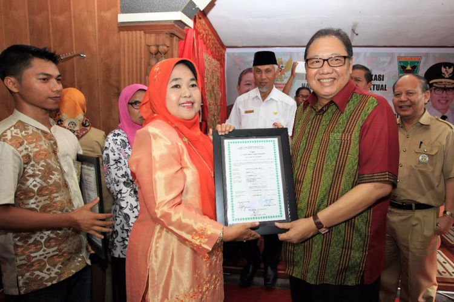

Menteri puspayoga serahkan sertifikat HKI gratis kepada ukm di padang
PRAMDIA ARHANDO JULIANTO
KabarKabur.com - 27/09/2017, 13:27 WIB

Menteri Koperasi dan UKM Puspayoga, menyerahkan sertifikat hak atas kekayaan intelektual (HKI), yakni hak cipta dan sertifikat halal untuk sembilan pelaku Usaha Kecil Menengah (UKM) di Kota Padang Sumatera Barat (Sumbar).(Dok Kemenkop UKM)
Menteri Koperasi dan UKM Puspayoga, menyerahkan sertifikat hak atas kekayaan intelektual (HKI), yakni hak cipta dan sertifikat halal untuk sembilan pelaku Usaha Kecil Menengah (UKM) di Kota Padang Sumatera Barat (Sumbar).
Para pelaku UKM ini mendapatkan sertifikat hak cipta dan sertifikat halal secara gratis dari Kemenkop dan UKM.
“Ini semua gratis, sebagai salah satu bentuk dukungan pemerintah untuk UKM,” ujar Puspayoga melalui keterangan resmi, Rabu (27/9/2017).
Puspayoga mengatakan, pihaknya bergerak cepat memberikan sertifikat hak cipta untuk sejumlah UKM agar tidak ada pihak lain yang mengklaim hak cipta tersebut.
Menurutnya, dengan memiliki sertifikat hak cipta, maka produk usaha tersebut bisa dijual ke mana saja tanpa khawatir, termasuk ke luar negeri.
“Kita tahu ada saja negara lain yang mengklaim produk kita,” kata Puspayoga. Sementara itu, Walikota Padang Mahyeldi Ansharullah, mengatakan sertifikat HKI tersebut akan mendorong pertumbuhan UKM di Kota Padang.
Gusri Wahyuni perajin bordir yang mendapatkan sertifikat hak cipta mengatakan, selama ini informasi yang diperoleh bahwa motif bordir tidak bisa mendapat sertifikat hak cipta.
“Ternyata selama ini saya dapat informasi yang salah. Fasilitas hak cipta gratis dari Kemenkop UKM ini sangat membahagiakan kami sebagai IKM bordir,” kata Gusri.
Gusri mengatakan setelah mendapat sertifikat hak cipta, dia optimistis bordir kerancang bermotif baluik patai-patai tidak akan ada yang bisa meniru.
Ini akan menguntungkan usahanya, karena merupakan satu-satunya yang memproduksi motif tersebut.
Wirta Zanur, pengusaha makanan khas Padang yakni Rendang juga menerima sertifikat halal dari Kementerian Koperasi dan UKM, menurutnya sertifikat halal sangat dibutuhkan untuk menjamin kehalalan produk makanan yang disajikan.
Menurutnya, dalam mengurus sertifikat halal tersebut, prosesnya cukup cepat dan difasilitasi oleh Kementerian.
“Prosesnya cuma sekitar satu bulan, mulai dari isi formulir dan tim survey datang ke dapur kami, melihat bahan baku daging yang kami pakai,” kata Wirta.
Penulis : Pramdia Arhando Julianto
Editor : Aprillia Ika